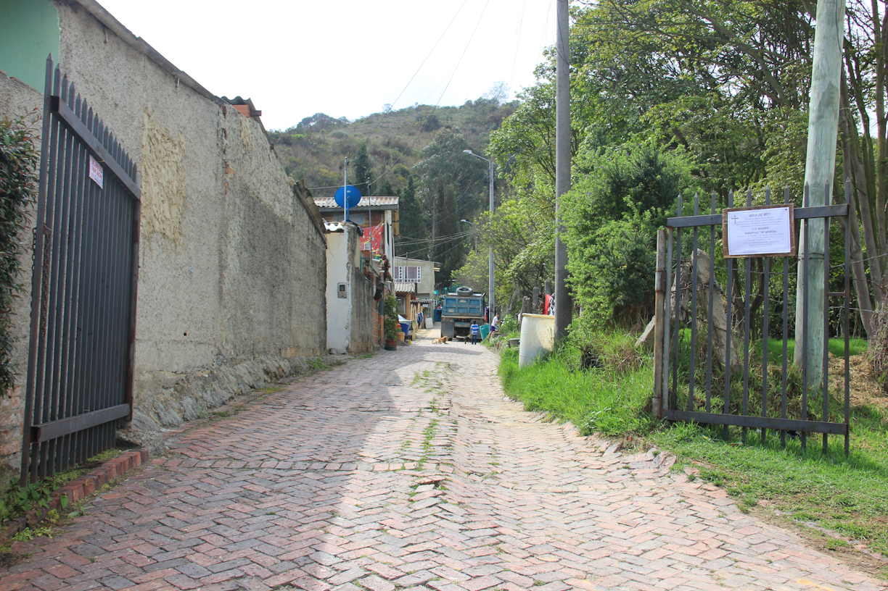
Todo comienza acá; este es el lugar donde los misioneros buscan cambiar vidas.
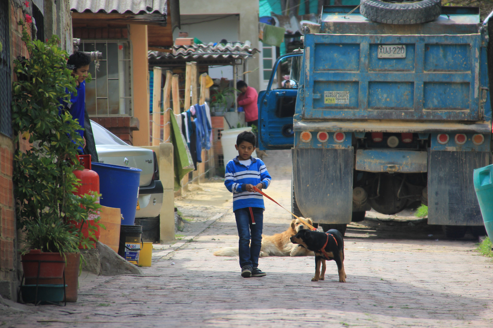
Una mirada más cercana. Nos adentramos a las casas de la comunidad y tenemos contacto con la primera persona, Juan David.
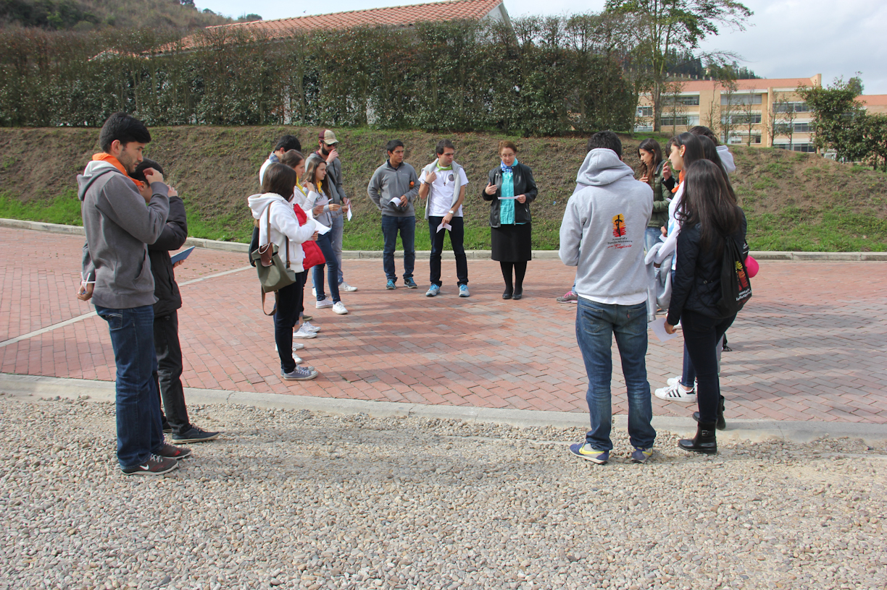
Nos preparamos para salir con una meditación liderada por Edurne, consagrada a Dios en el Movimiento Regnum Christi.
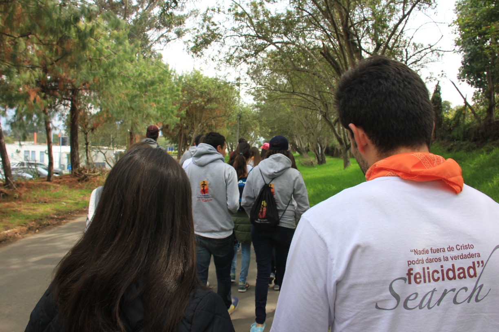
Nos dirigimos hacia el primer sector de la vereda, Vivero, donde se llevarán a cabo las actividades.
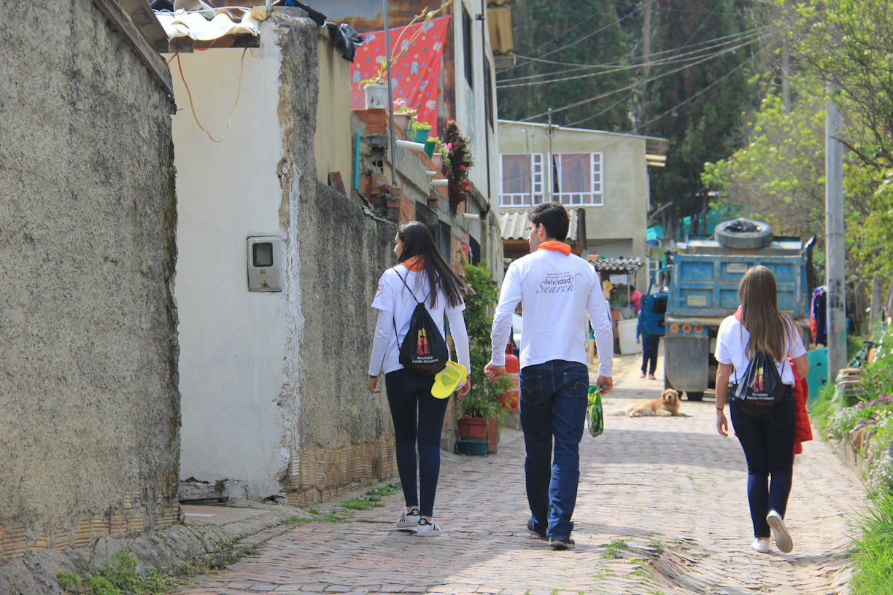
Nos dividimos en grupos para invitar a los habitantes a las actividades que se realizarán.
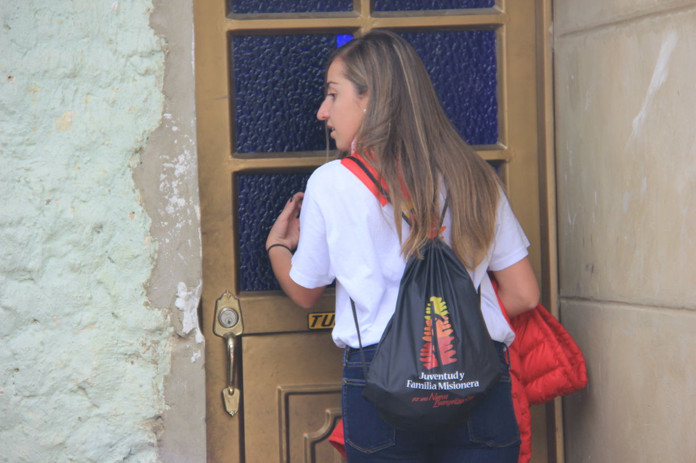
Golpeando la puerta de doña Marcela para saludar e invitar a la actividad del día.
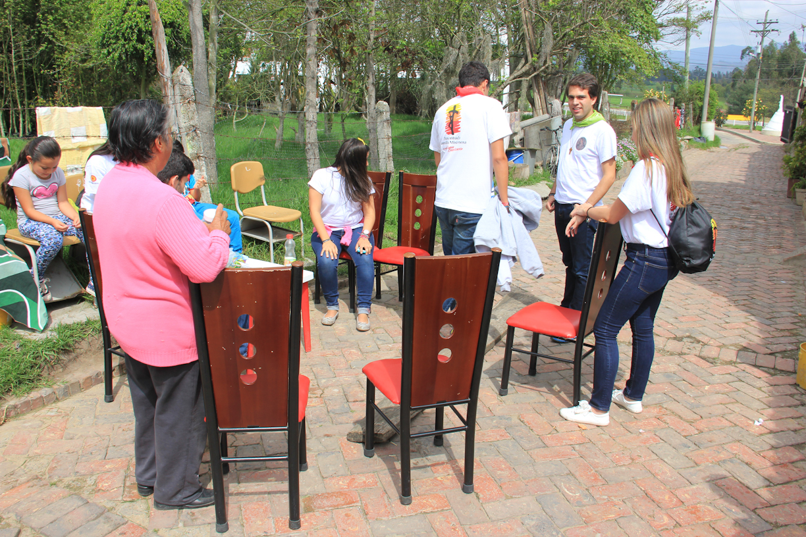
A punto de comenzar la actividad; enseñaremos a hacer rosarios a la comunidad.
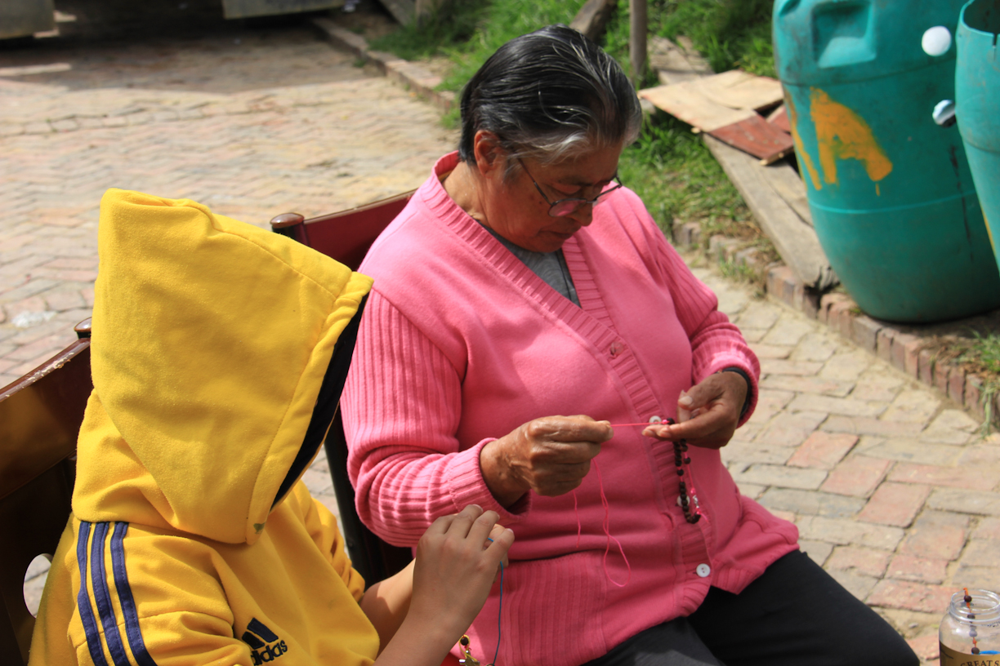
Doña Blanca con su nieto, haciendo cada uno un rosario.
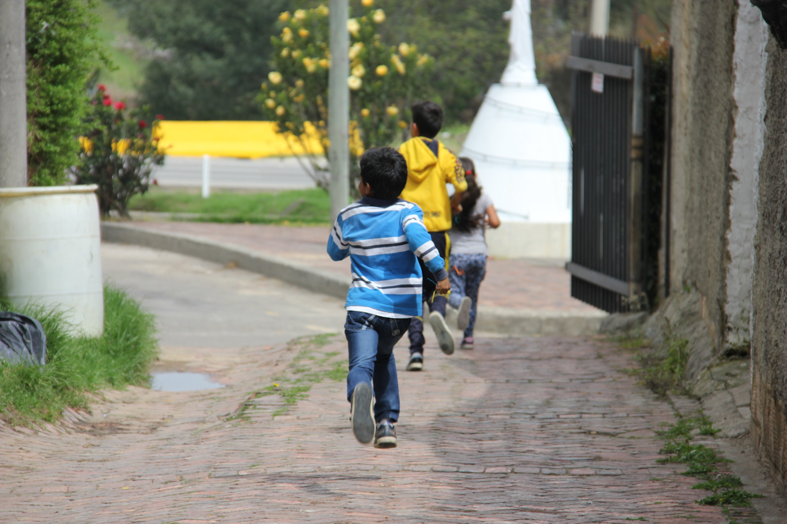
"Coca-Cola mata tinto", dice Doña Blanca cuando los niños de la comunidad salen corriendo a ver los "boogies" pasar.
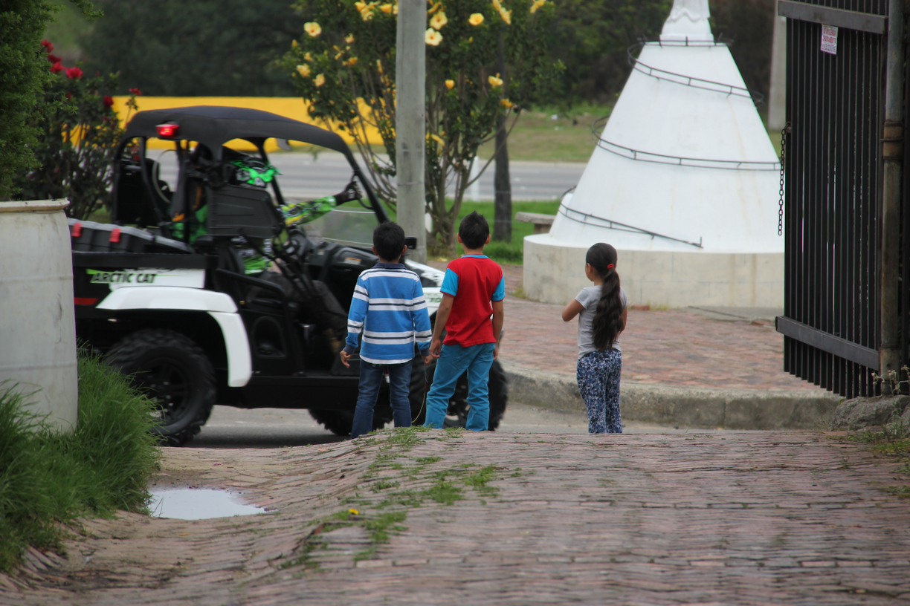
Todos dejamos de hacer rosarios para ver a los niños disfrutar de los "boogies" pasando.
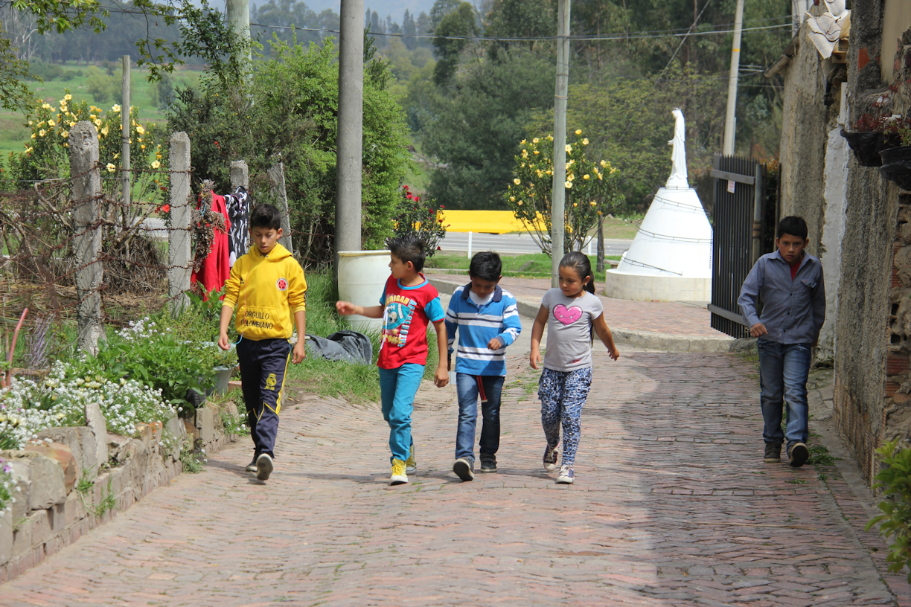
Ya no hay más afán. Los niños vuelven al centro de la calle donde estábamos reunidos para seguir con la actividad de los rosarios.
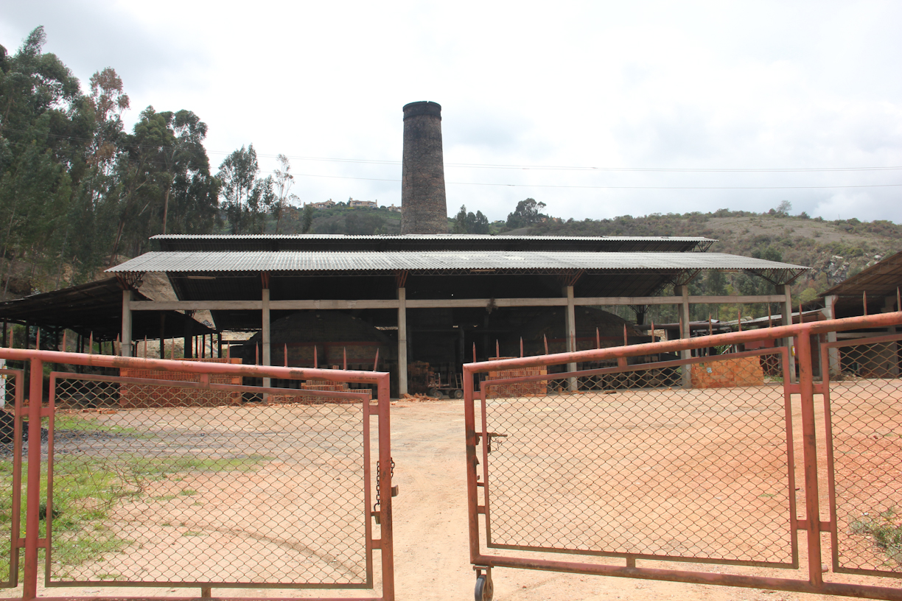
Mientras la actividad sigue, empezamos a tomar fotos alrededor, donde se ve la ladrillera que da de comer a la mayoría de las familias y contamina su vereda.
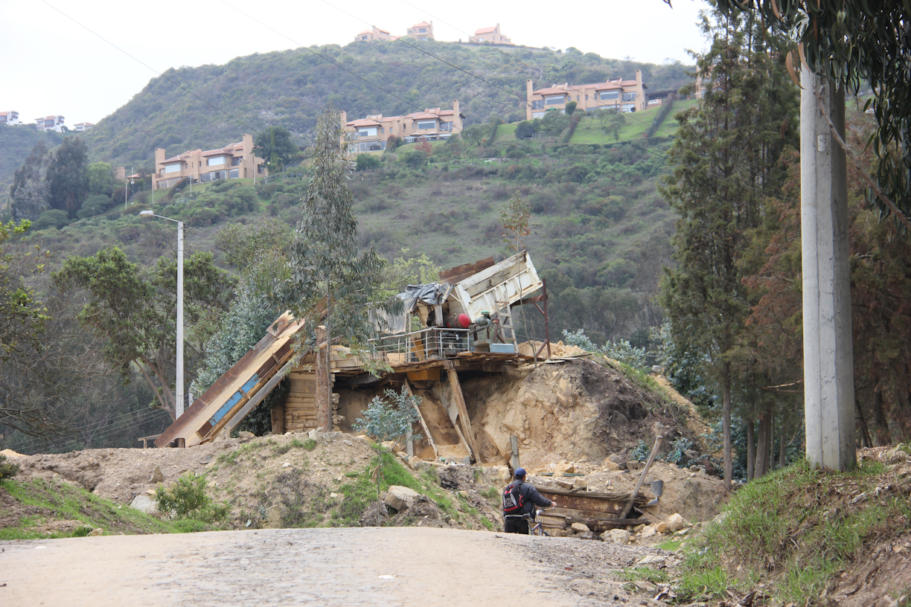
Al fondo se observan algunas de las casas más exclusivas de Bogotá y sus al rededores; Sindamanoy. En primer plano, en cambio, vemos el acueducto de la vereda.
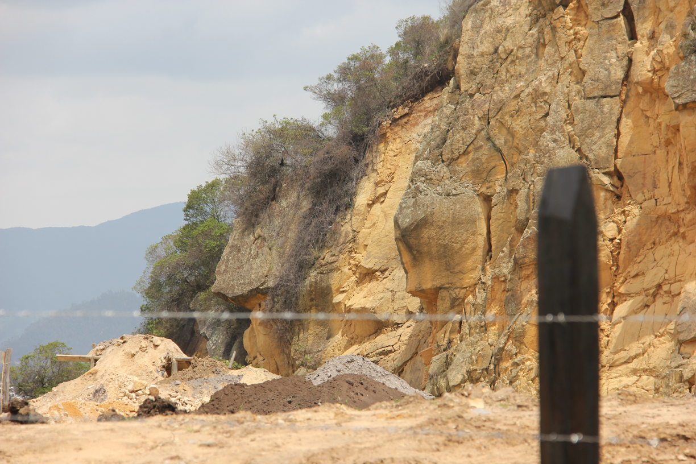
Los restos de la cantera explotada, lo que fue también por muchos años el sustento de la comunidad.
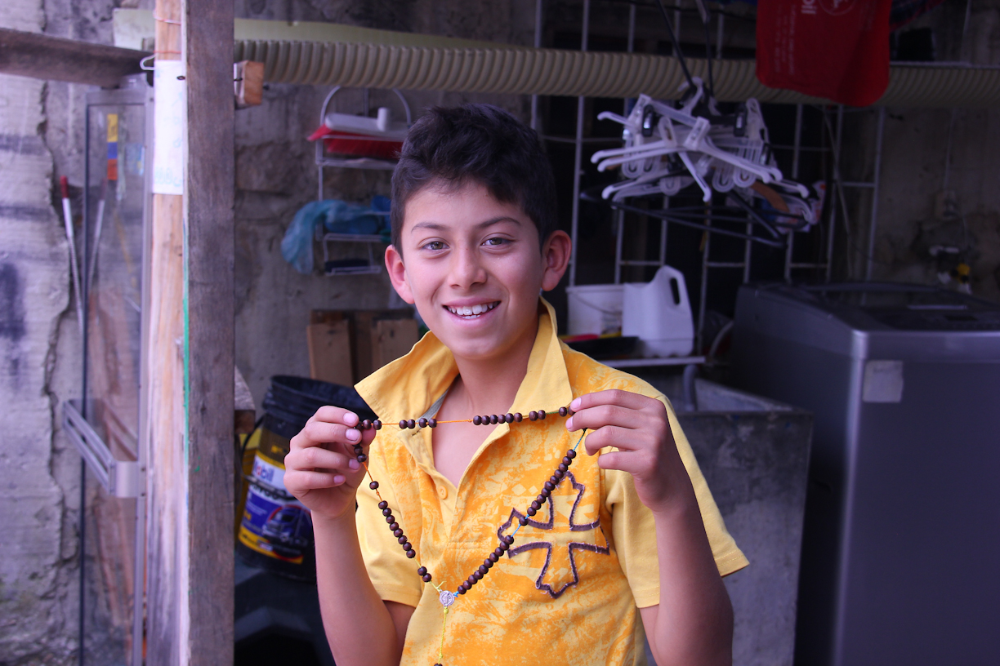
Volvemos al centro de la calle. Sebastián nos muestra feliz que terminó su rosario.
...